La Generalitat negocia con Microsoft que esta multinacional instale un centro de I + D en Cataluña que sirva de locomotora al eje tecnológico que iría desde el campus de la UAB , en Cerdanyola del Vallés , hasta las nuevas instalaciones de la UPC en Castelldefels , según explicó hoy el consejero de la Presidencia , Joaquim Triadú.
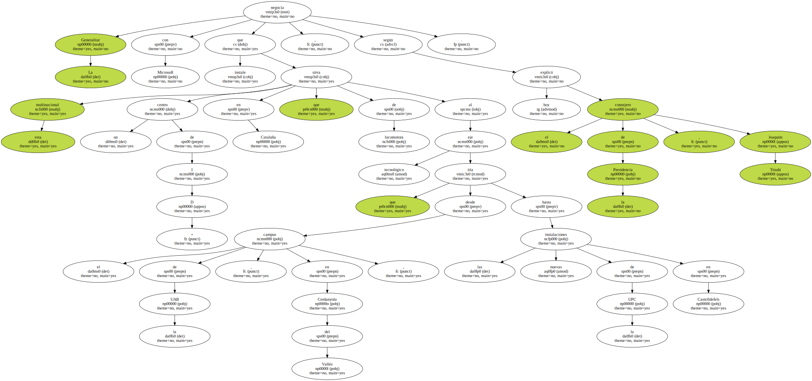Triadú detalló hoy , durante unas jornadas sobre la situación tecnológica de Cataluña , que a tal efecto se reunieron el mes pasado en Seattle ( Estados Unidos ) el presidente ejecutivo de Microsoft , Steve Ballmer , y el consejero de Industria de la Generalitat , Antoni Subirá.
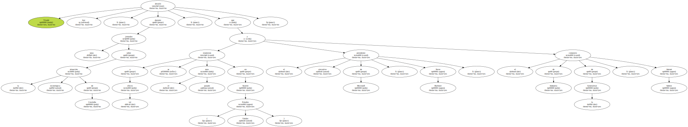" Este encuentro ha servido para que Microsoft tenga en cuenta que puede instalar este centro en Cataluña , aunque la competencia de ciudades como Berlín o Londres es muy grande " , advirtió Joaquim Triadú.
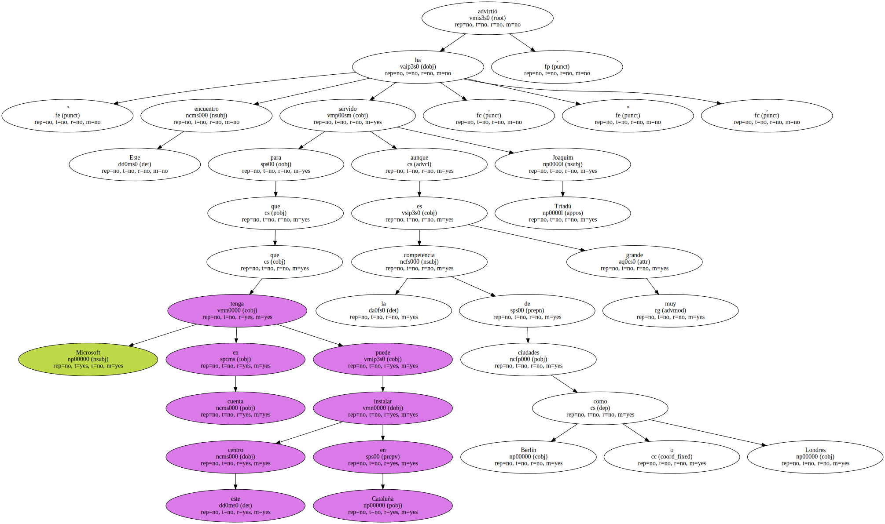Según Triadú , " se trataría de que Microsoft sirviese de motor al eje tecnológico que quiere impulsar la Generalitat y que iría desde el campus de la Universidad Autónoma de Barcelona ( UAB ) , pasaría por el Parque Tecnológico del Vallés , que está en fase de ampliación ; bajaría a lo largo de la B-30 alcanzando el proyecto 22 @ en el Poblenou de Barcelona , y terminaría en el campus de Castelldefels de la Universidad Politécnica de Cataluña ( UPC ) ".
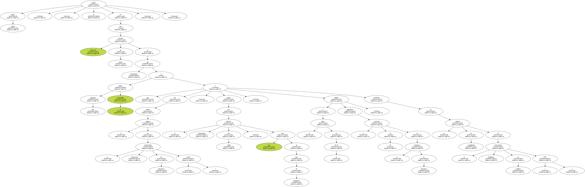Triadú definió este eje " como un nuevo Silicon Valley , algo difícil de conseguir pero que la Generalitat tiene la obligación de intentar ".
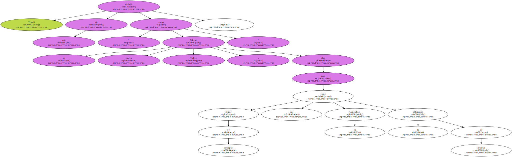En este sentido , el gigante informático Microsoft ha decidido celebrar en Barcelona las dos próximas reuniones anuales de transferencia de tecnología , que convocan cada año a 8.000 técnicos y que tendrán lugar a finales de los años 2001 y 2002.

El posible centro que Microsoft estudia desarrollar en Barcelona sería para telefonía móvil de tercera generación UMTS y en él podrían colaborar Telefónica y la propia UPC.
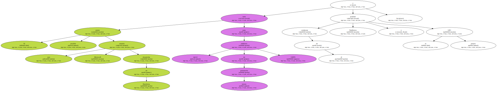Por otra parte , Triadú también señaló que la Generalitat prepara un cambio de legislación a través de un nuevo decreto que permita usar la red viaria que depende de la Generalitat , así como las vías de Ferrocarriles Catalanes y de metro para que las operadoras de cable extiendan su red.
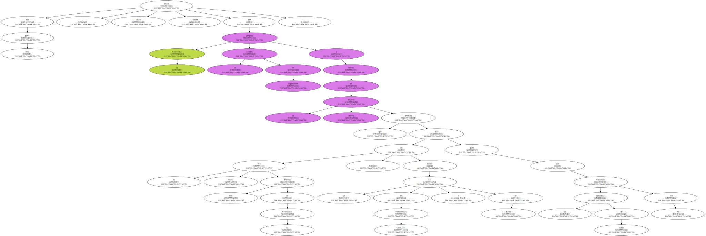El consejero de Presidencia manifestó que este nuevo decreto , que está estudiando en este momento los equipos jurídicos de la Generalitat , está previsto que entre en vigor el próximo mes de noviembre con el objetivo de facilitar la llegada de la infraestructura del cable a toda Cataluña.
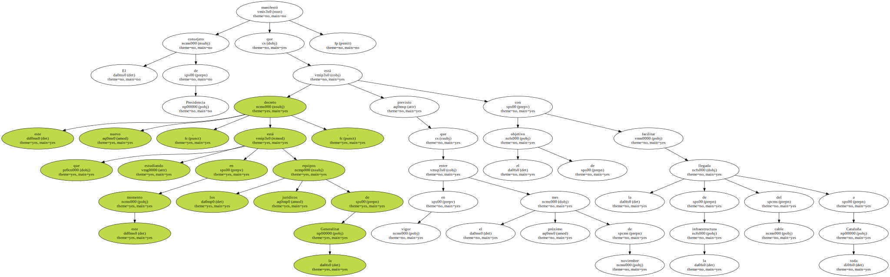Además , Triadú anunció que la Generalitat impulsará nuevos portales de Internet con vocación de liderazgo europeo , como un portal de temática sanitaria , que contará con el apoyo de la Corporación Catalana de Radio y Televisión y el Centro de Telecomunicaciones de la Generalitat y que supondrá una inversión de 1.000 millones de pesetas.
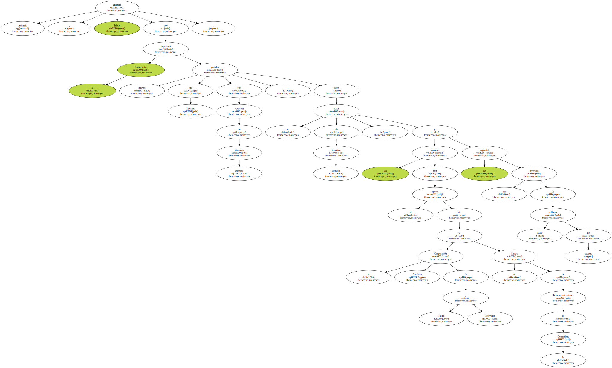Asimismo , Triadú señaló que en la misma línea se impulsarán , siempre con la ayuda del sector privado , portales de temática educativa y de comunicación , que , en todos los casos , utilizarán " con toda normalidad el catalán , castellano e inglés ".
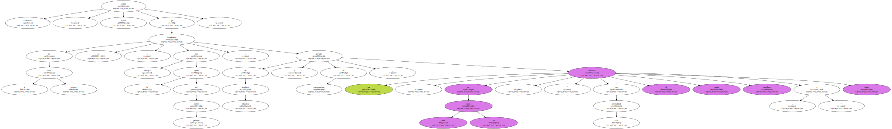Triadú destacó la buena salud de Internet en Cataluña y consideró muy positivo iniciativas como la llegada de Terra a Barcelona para consolidar este nuevo sector.
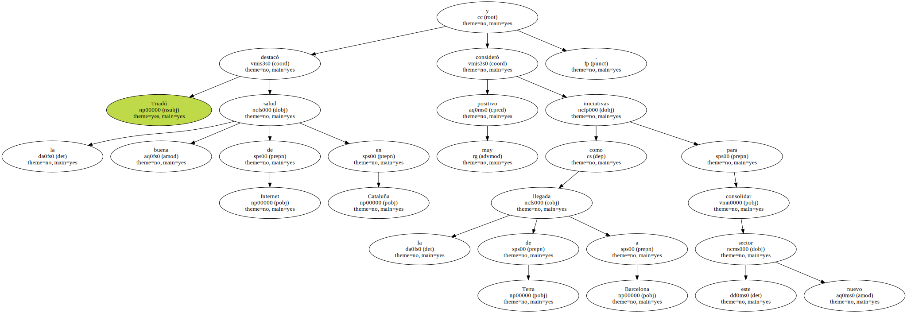